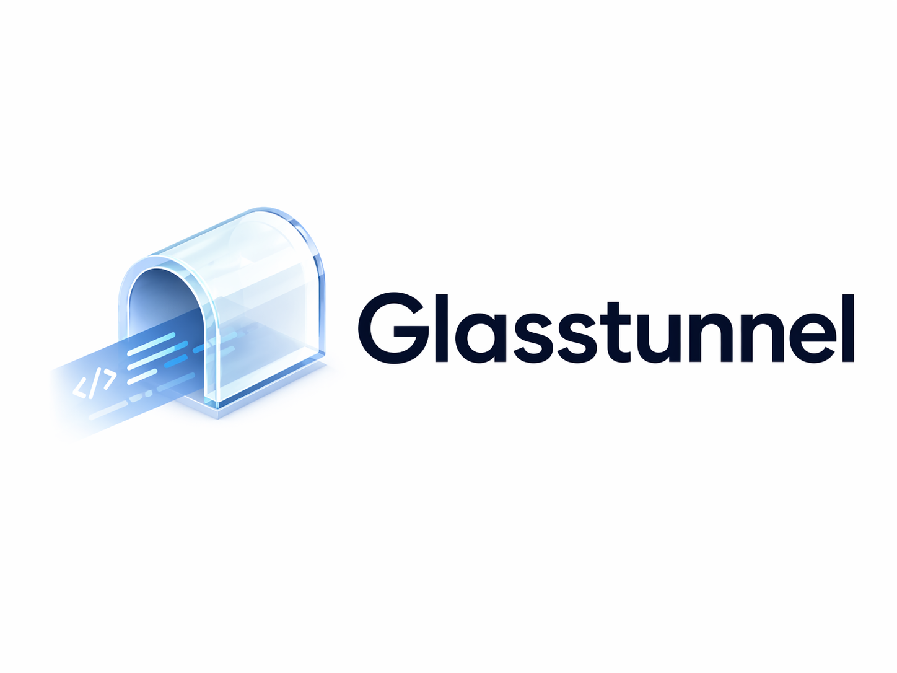

Walk away from your desk. Check in from the subway. Send a prompt. Come home to a finished task. Glasstunnel is an open-source tunnel from a Mac running Cursor, Claude Code, Codex, or OpenCode to a mobile PWA. The agent keeps running in its original local context — no token burn, no half-synced GitHub state.
Link the host once, then open Cursor, Claude Code, Codex, OpenCode, or a mirrored window as remote apps from your phone.
Quick-reply templates (continue, try again, commit), voice input, full keyboard. Everything lands in the real local agent, not a cloud re-index.
For Cursor and Claude Code we use first-class adapters that know when the agent finishes or needs approval. Your phone pings; you tap; you keep moving.
You've spent two hours loading a project into Cursor's window. Spinning up a remote Codespace just to respond to a diff burns minutes and tokens you don't need to spend.
The .env, the SSH keys, the half-finished ideas. Glasstunnel never moves
them. We even redact them before they hit the tunnel.
Apache 2.0 core. Self-hostable signaling + TURN in one docker compose up.
Your code, your data, your tunnel.
git clone https://github.com/datawithfurkan/glasstunnel
cd glasstunnel/deploy
cp .env.example .env # tune the TURN password
docker compose --env-file .env up -d
Signaling on :8080. coturn on :3478. The local Go self-host path
stays device-key scoped; the hosted path adds Cloudflare + Supabase account linking. Full
guide in
docs/self-hosting.md
.
Full threat model: docs/security.md .